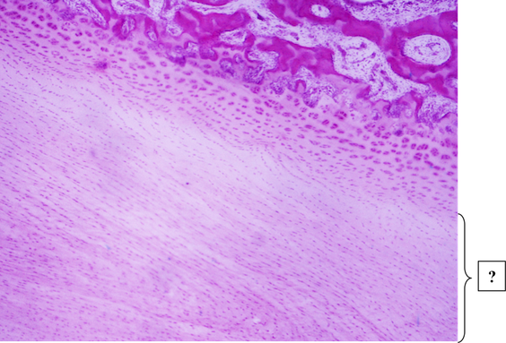
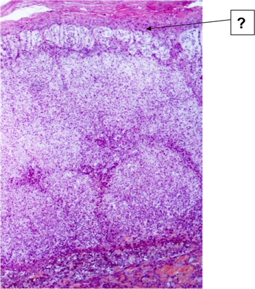
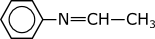

Обеспечение распознавание других клеток
Углеводные цепи связаны с белками и липидами клеточной мембраны
Обеспечение активного транспорта веществ
Обеспечение адгезивных свойств клетки
Углеводный компонент обеспечивает отрицательный заряд на поверхности клетки
Трабекула
Трабекулярная вена
Центральная артерия
Белая пульпа
Трабекулярная артерия
Красная пульпа
Периметрий матки
Адвентициальная оболочка мочеточника
Адвентициальная оболочка пищевода
Серозная оболочка мочевого пузыря
Серозная оболочка пилорического отдела желудка
Серозная оболочка маточной трубы
Является кортикальным слоем цитоплазмы
Обеспечивает распознавание клеткой соседних клеток
Определяет форму клетки и ее изменения
Содержит фибриллярно-тубулярные компоненты
Содержит актиновые филаменты
Мышечная пластинка слизистой мелкого бронха
Мышечная оболочка мочеточника
Надсосудистый слой миометрия матки
Мышечная оболочка маточной трубы
Сосудистый слой миометрия матки
Мышечная оболочка пищевода
Базофильные аденоциты промежуточной части гипофиза
Гемокапилляры
Хромофобные аденоциты передней доли гипофиза
Ацидофильные аденоциты передней доли гипофиза
Базофильные аденоциты передней доли гипофиза
Сперматоцит 1-го порядка
Сперматогония
Интерстициальная клетка Лейдига
Поддерживающая клетка Сертоли
Сперматида
Миоэпителиальная
Способны поглощать йод
Выделяемый гормон снижает уровень кальция в крови
Верхушка клеток не соприкасается с просветом фолликула
Являются гипофиз-независимыми клетками
Лимфоидные фолликулы фундальной части желудка
Лимфоидные фолликулы аппендикса
Лимфоидные фолликулы толстого кишечника
Лимфоидные фолликулы тощей кишки
Лимфоидные фолликулы пищевода
Кератиноциты шиповатого слоя связаны многочисленными десмосомами
В базальном и шиповатых слоях присутствуют делящиеся клетки
Все клетки располагаются на базальной мембране
Базальный слой располагается на базальной мембране
Наружный слой содержит роговые чешуйки
Инсулоциты панкреатических островков
Эндокриноциты коры надпочечников
Паратироциты паращитовидных желез
Парафолликулярные тироциты щитовидной железы
Апудоциты ДЭС (диффузной эндокринной системы)
Собственная пластика слизистой оболочки аппендикса
Мышечная пластинка слизистой оболочки мочеточника
Мышечная пластинка слизистой оболочки мочевого пузыря
Подслизистая оболочка желудка
Мышечная пластинка слизистой оболочки пищевода
Мышечная пластинка слизистой оболочки кардиального отдела желудка
Имеют хорошо развитую гладкую эндоплазматическую сеть
Способны к синтезу эстрогенов и окситоцина
В цитоплазме присутствуют митохондрии с тубулярно-везикулярными кристами
Деятельность регулируется фолликулостимулирующим гормоном
Синтезируют факторы, стимулирующие деление половых клеток

Ретикулофиброзная костная
Эластическая хрящевая
Плотная волокнистая оформленная соединительная
Гиалиновая хрящевая
Волокнистая хрящевая
Пластинчатая костная
Внутренние генеральные
Наружные генеральные
Остеоны
Периост
Вставочные
Миофибрилла кардиомиоцита
Миофиламент кардиомиоцита
Миофиламент мышечного волокна
Саркомер мышечного волокна
Миофибрилла мышечного волокна
Саркомер кардиомиоцита

Клубочковая зона коры надпочечника
Суданофобный слой коры надпочечника
Сетчатая зона коры надпочечника
Пучковая зона коры надпочечника
Cубкапсулярная зона коры надпочечника
Х-зона коры надпочечника
Сперматогония
Сперматоцит 1-го порядка
Интерстициальная клетка Лейдига
Поддерживающая клетка Сертоли
Миоидная
Сперматида
Адвентициальная оболочка пищевода
Периметрий матки
Серозная оболочка маточной трубы
Серозная оболочка пищевода
Адвентициальная оболочка мочеточника

Париетальные (обкладочные) экзокриноциты фундальной железы желудка
Эндокриноциты крипты тонкого кишечника
Шеечные мукоциты фундальной железы желудка
Бокаловидные клетки крипты тонкого кишечника
Каемчатые (столбчатые) эпителиоциты крипты тонкого кишечника
Экзокриноциты с ацидофильной зернистостью (клетки Панета) крипты тонкого кишечника
Мембрана ЭПС
Плазмолемма кардиомиоцита
Плазмолемма мышечного волокна
Эндомизий
Базальная мембрана кардиомиоцита
Базальная мембрана мышечного волокна
Остеогенный слой надкостницы
Зона зрелого хряща
Зона старого хряща
Остеонный слой
Зона молодого хряща
Эндохондральное окостенение
Перисинусоидальное пространство
Гемокапилляр соматического типа
Желчный капилляр
Междольковый желчный проток
Синусоидный гемокапилляр
Нейритами клеток Пуркинье
Параллельными волокнами
Лазящими волокнами
Моховидными волокнами
Эндокриноциты
Меланоциты
Кератиноциты
Клетки Меркеля
Клетки Лангерганса
Корень волоса
Волосяная сумка
Волосяной мешок
Выводной проток потовой железы
Мышца, поднимающая волос
Выводной проток сальной железы
Слизистая оболочка яйцевода
Базальная пластинка
Амниотическая оболочка
Хориальная пластинка
Ворсинка хориона
Рыхлая волокнистая соединительная
Гиалиновая хрящевая
Однослойный однорядный реснитчатый эпителий
Гладкая мышечная
Нервная
Лимфоидная
Базальные или вставочные клетки
Реснитчатые клетки
Бокаловидные клетки
Эндокринные клетки
Микроворсинчатые клетки
Внутридольковый проток молочной железы
Уретра
Общий проток молочной железы
Выводной проток простатических желез
Междольковый проток молочной железы
мышца, поднимающая небную занавеску (m. levator veli palatini)
небно-язычная мышца (m. palatoglossus)
небно-глоточная мышца (m.palatopharyhgeus)
мышца язычка (m. uvulae)
мышца, напрягающая небную занавеску (m. tensor veli palatini)
поднижнечелюстные протоки (ductus submandibulares)
околоушные протоки (ductus parotidei)
небные железы (glandulae palatinae)
подъязычные протоки (ductus sublinguales)
зев (fauces)
желудочное
селезеночное
почечное
двенадцатиперстнокишечное
пищеводное
тонкая и прерывистая
толстая и непрерывная
является наружной оболочкой глотки
занимает место подслизистой основы
плотно прикрепляется к наружной поверхности основания черепа (basis cranii externa)
на малом сосочке двенадцатиперстной кишки (papilla duodeni minor)
на большом сосочке двенадцатиперстной кишки (papilla duodeni major)
в верхнюю часть двенадцатиперстной кишки (pars superior duodeni)
в привратниковую часть желудка (pars pylorica)
в печеночно-поджелудочную ампулу (ampulla hepatopancreatica)
общий желчный проток (ductus choledochus)
проток поджелудочной железы (ductus pancreaticus)
добавочный проток поджелудочной железы (ductus pancreaticus accessorius)
общий печеночный проток (ductus hepaticus communis)
пузырный проток (ductus cysticus)
плотно прикрепляется к наружной поверхности основания черепа (basis cranii externa)
тонкая и прерывистая
является наружной оболочкой глотки
толстая и непрерывная
занимает место подслизистой основы
диафрагмальное
бронхиальное
аортальное
глоточно-пищеводное
кардиальное
супраперитонеальное
интраперитонеальное
экстраперитонеальное
мезоперитонеальное
инфраперитонеальное
губы (labia oris)
зубы (dentes)
десны (gingivae)
щеки
небо (palatum)

Дерматом
Нефрогонотом
Склеротом
Миотом
Мышечная пластинка слизистой образована гладкомышечными клетками
В собственной пластинке слизистой располагаются простые слизистые альвеолярные железы
Образуются как выпячивание стенки семявыносящего протока
Стенка образована тремя оболочками
Эпителий слизистой оболочки содержит секреторные и камбиальные клетки
Проводящие кардиомиоциты (волокна Пуркинье) в стенке сердца
Эластические окончатые мембраны в стенке артерии эластического типа
Гладкие миоциты в стенке артерии мышечного типа
Соединительная ткань эпикарда
Сократительные кардиомиоциты в стенке сердца
Кальцитонин
Трийодтиронин
Соматостатин
Окситоцин
Тироксин

Периферический трофобласт
Лакуна с кровью матери
Соединительная ткань эндометрия
Экзоцелом
Симпластотрофобласт
Внезародышевая мезодерма
ее передняя поверхность покрыта брюшиной
железа только внутренней секреции и не имеет выводных протоков
ее головка окружена двенадцатиперстной кишкой
выделяет желчь
ее секрет выводится в 12-перстную кишку
проток, вена, артерия
проток, артерия, вена,
вена, проток, артерия
вена, артерия, проток
артерия, проток, вена,
этанол
метиловый спирт
уксусная кислота
этаналь
метилэтиловый эфир
1) пропиловый спирт
2) формиат натрия
3) муравьиная кислота
4) дипропиловый эфир
5) пропилат натрия
1) третичный амин
2) соль вторичного алкиламмония
3) соль четвертичного алкиламмония
4) вторичный амин
5) соль третичного алкиламмония
1) сложный эфир
2) этиловый эфир орто-аминобензойной кислоты
3) ароматический амин
4) этил-4-аминобензоат
5) этиловый эфир пара-аминобензойной кислоты
1) - карбоксильная группа
2) - алкоксигруппа
3) - сульфогруппа
4) - карбонильная группа
1) Алкилирующая способность алкилсульфатов меньше, чем алифатических спиртов - неверно
2) Атом хлора в винилхлориде очень трудно замещается в реакциях нуклеофильного замещения - неверно
3) Дегидратация спиртов требует кислотного катализа - неверно
4) Возможность протекания нуклеофильного замещения не зависит от природы уходящей группы - неверно
1) Сложные эфиры – функциональные производные карбоновых кислот и спиртов - неверно
2) Бензольное кольцо является функциональной группой ароматических соединений - неверно
3) Вторичный атом углерода – атом, связанный с двумя другими любыми атомами - неверно
4) Потеря одного атома водорода отражается суффиксом -ил в названии радикала - верно
1) - ClCH2COOH
2) - Cl2CHCOOH
3) - НСООН
4) - CH3COOH
1) - ОН-СН2-СН2OH
2) - СН3-СН2OH
3) - ОН-CH2-COOH
4) - CH3-COOH
1) протекают под действием высокой температуры, облучения - верно
2) гомолитический разрыв ковалентной связи - неверно
3) наличие в молекуле полярной или легко поляризующейся ковалентной связи - неверно
4) протекают с участием электрофильных или нуклеофильных реагентов - верно
1) этандиамин-1,2
2) первичный амин
3) соль первичного алкиламмония
4) этиламин
5) этиламмонийбромид
1) Эпидермис толстой кожи
2) Гиподерма
3) Сосочковый слой дермы кожи
4) Сетчатый слой дермы кожи
5) Эпидермис тонкой кожи
1) Являются видоизмененными эпителиальными клетками
2) Развиваются из эктодермы
3) Содержат сократительные филаменты
4) Образуют секрет
5) Способствуют выведению секрета

1) Эндотелиоциты в стенке метартериолы
2) Миоциты в стенке артериолы
3) Эндотелиоциты в стенке гемокапилляра
4) Эндотелиоциты в стенке венулы
5) Эндотелиоциты в стенке лимфатического капилляра
1) 4,0-9,0 × 10 9
2) 5,0-7,5 × 10 12
3) 2,5-5,0 × 10 9
4) 10,0-12,0 × 10 9
5) 4,0-9,0 × 10 12
1) Стереохимические формулы показывают только порядок соединения атомов - верно
2) Асимметрический атом углерода – атом, связанный с тремя различными заместителями - верно
3) σ-Диастереомеры – пространственные изомеры, не являющиеся зеркальными отражениями друг друга - неверно
4) В формулах Фишера вертикальные связи направлены за плоскость чертежа - неверно
1) - ОН-СН2-СН2OH
2) - СН3-СН2OH
3) - ОН-CH2-COOH
4) - CH3-COOH
1) - амид
2) - вторичный амин
3) - кетимин
4)  - альдимин
- альдимин
1) атом азота в - нуклеофильный центр
- нуклеофильный центр
2) I– - уходящая группа
3) CH3– в метилиодиде - нуклеофил
4)  - электрофильный центр
- электрофильный центр
1) - карбонильная группа альдегидов
2) - гидроксигруппа
3) - карбонильная группа кетонов
4) - карбоксильная группа
1)
2)
3)
4)
5) 
1) 3,4,5-тригидроксипентаналь
2) гидроксиальдегид
3) гидроксикетон
4) 3,4,5-тригидроксивалериановый альдегид
5) 2,3,4,5-тетрагидроксипентаналь
1) -
2) - С2Н5–NH–C2H5
3) - 
4) -
1)
2)
3) 
4) Н2О
5) 
1)
2)
3) 
4)
5)
1) - СН3-СН2OH
2) - CH3-COOH
3) - ОН-СН2-СН2OH
4) - ОН-CH2-COOH

1) E - -неверно
2) Z - -неверно
3) транс - -неверно
4) цис - -верно
1) является экзокринной железой
2) является эндокринной железой
3) является смешанной железой по своей природе
4) расположена экстраперитонеально
5) полностью покрыта брюшиной
1) изогнутые мышечные пучки желудочной стенки
2) изогнутые складки брюшины на желудке
3) края желудка
4) проекции желудка на брюшную стенку
5) изогнутые складки слизистой желудка
1) - фиксация в жидком фиксаторе (спирте)
2) - нанесение антимикробных кроличьих антител, затем тщательное промывание буфером
3) - нанесение меченых флуорофором антител против антител кролика, затем тщательное промывание буфером
4) - приготовление мазка-отпечатка органа или ткани
5) - изучение результатов в люминесцентном микроскопе
1) Мутация - Передача генетического материала при прямом контакте клеток
2) Трансформация - Перенос генетической информации с участием бактериофага
3) Конъюгация - Случайное наследуемое изменение генетического материала
4) Репликация - Захват клеткой свободной ДНК из внешней среды
5) Трансдукция - Синтез дочерней молекулы ДНК по матрице родительской молекулы ДНК
1) Транспозон - Участок молекулы ДНК, отвечающий за синтез одного конечного продукта (белка или функциональной РНК)
2) Плазмида - Участок молекулы ДНК, считывающийся в составе одной молекулы мРНК и кодирующий синтез нескольких конечных продуктов
3) Оперон - Молекула ДНК, реплицирующаяся автономно от бактериальной хромосомы
4) Ген - Нуклеопротеидный комплекс, осуществляющий синтез белка по матрице мРНК
5) Рибосома - Участок молекулы ДНК, способный спонтанно перемещаться в разные участки генома
1) гидролиз или химическая модификация молекулы антибиотика
2) изменение структуры молекулы-мишени, предотвращающее связывание антибиотика
3) активное выкачивание антибиотика из бактериальной клетки
4) появление нерибосомальных систем синтеза белков
5) замена фосфолипидов в мембране на эфиры терпеновых спиртов